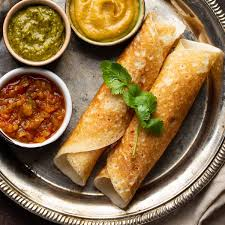

find a list of all recipes here!
Dosa

Description
A dosa, dose, or dhosai is a thin, crispy South Indian pancake made from fermented rice and lentil batter. It can be served plain or filled with a flavorful potato masala, like the classic Masala Dosa.
Ingredients
Steps
- Soak 1½ cups raw white rice (Sona Masuri or dosa rice), ½ cup whole urad dal,1 tablespoon each of chana dal and toor dal, ½ teaspoon methi seeds together in water.
-
Drain the soaked ingredients and transfer them to a blender. Add ½ cup water and grind into a smooth batter. Add more water, if needed, to achieve a medium-thick, pourable consistency.
- Add salt to taste, then gently mix the batter well with your hand. Mixing by hand helps incorporate air into the batter, making the dosa softer and lighter.